← 프로젝트 목록← All projects
Sentinel-1 SAR 기반 홍수 탐지 알고리즘Automated Flood Mapping from Sentinel-1 SAR
구름을 뚫고 보는 SAR의 장점을 살려, 지역마다 임계값을 손으로 맞추지 않아도 되는 자동 침수 탐지 파이프라인을 만들었다. 국내외 6개 이상 지역에서 검증했다.An automatic inundation-mapping pipeline that removes the need for hand-tuned, per-region thresholds — validated on six-plus flood events worldwide.
배경 · 목표Background
- 홍수 발생 시 침수 영역을 신속하게 자동 탐지할 수 있는 범용 알고리즘이 필요했다.
- Sentinel-1 SAR는 구름을 투과해 홍수 감시에 최적이지만, 지역마다 후방산란 분포가 달라 임계값 자동 설정이 어렵다.
- 수작업 분석의 한계를 넘어 여러 지역에 그대로 적용 가능한 코드를 만드는 것이 목표였다.
- Flood response needs inundation extents fast, and it needs them automatically.
- Sentinel-1 sees through cloud, but backscatter distributions differ by region, so a single fixed threshold does not transfer.
- The goal was code that generalises across sites instead of being re-tuned by hand each time.
방법Method
- Edge-Otsu thresholding으로 수체를 자동 분리 — 영상 전체 히스토그램 대신 물/육지 경계 버퍼에서만 샘플을 뽑아 Otsu를 적용해, 침수 면적이 작을 때 생기는 히스토그램 편향을 피했다.
- Bmax · Edge · Fuzzy 세 가지 임계값 전략을 구현해 비교했다.
- DEM slope 필터로 경사지의 레이더 음영(radar shadow) 오탐지를 제거했다.
- JRC 영구수체 마스크를 적용해 상시 수체와 신규 침수를 구분했다.
- DEM과 결합해 침수심(flood depth)을 추정하고 등급화했다.
- Edge-Otsu thresholding: instead of the whole-scene histogram, samples are drawn only from buffers along candidate water edges, which avoids the bias Otsu suffers when the flooded fraction is small.
- Three thresholding strategies — Bmax, Edge, Fuzzy — implemented and compared.
- DEM slope filtering to suppress radar-shadow false positives on steep terrain.
- JRC permanent-water mask to separate standing water from new inundation.
- Flood depth estimated and classified by combining the water mask with a DEM.
결과Results
- 다지역 범용 홍수 탐지 파이프라인 완성 (s1_processor v3 → v8, 8차 개선)
- 국내(진주·예산)와 해외(브라질·태국·부탄·필리핀·인도네시아 발리·멕시코) 사례 검증
- KuroSiwo 벤치마크 데이터셋 기준 정량 성능 지표 도출
- Copernicus EMS 공식 활성화 지도와 탐지 결과 대조 검증
- A general-purpose flood pipeline, iterated through eight versions (s1_processor v3 → v8).
- Validated on Korean events (Jinju, Yesan) and international ones (Brazil, Thailand, Bhutan, Philippines, Bali, Mexico).
- Quantitative performance measured against the KuroSiwo benchmark dataset.
- Detections cross-checked against official Copernicus EMS activation maps.

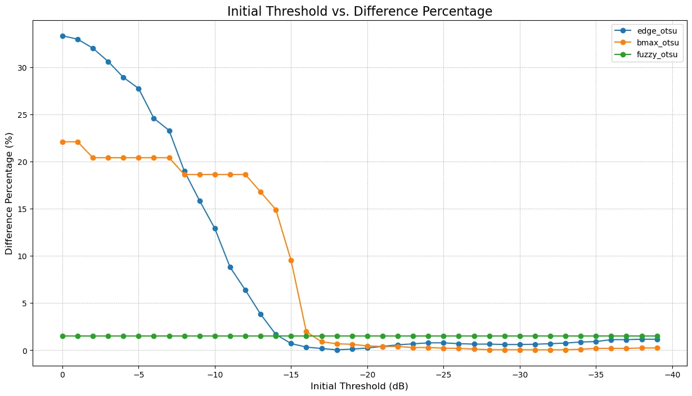
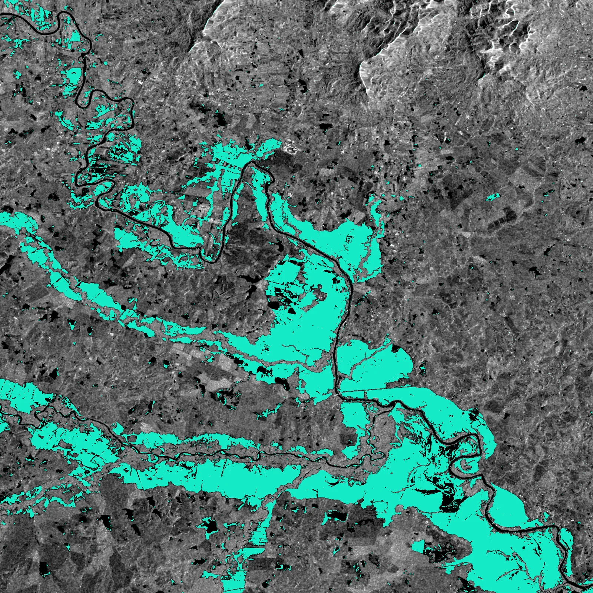
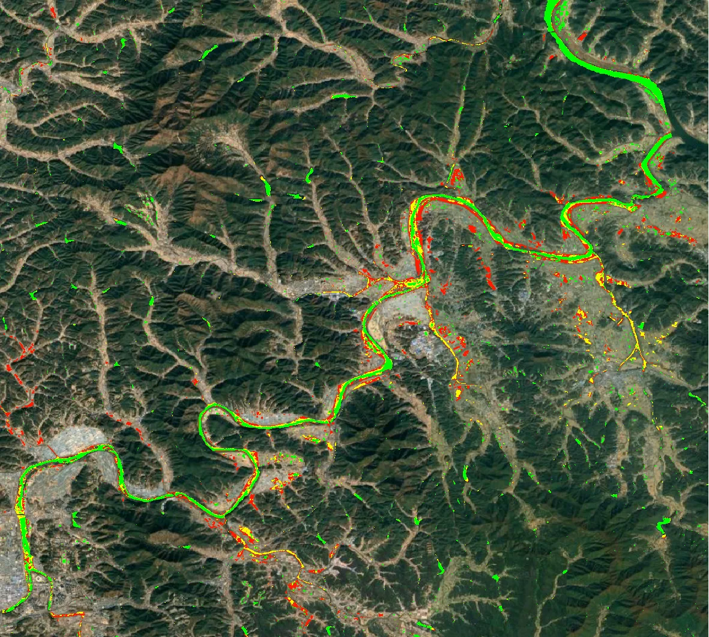
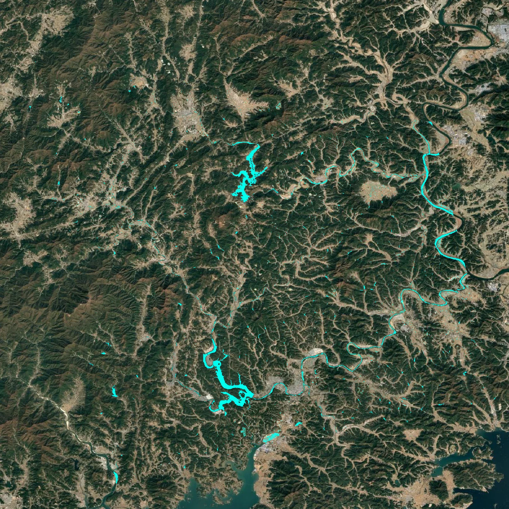
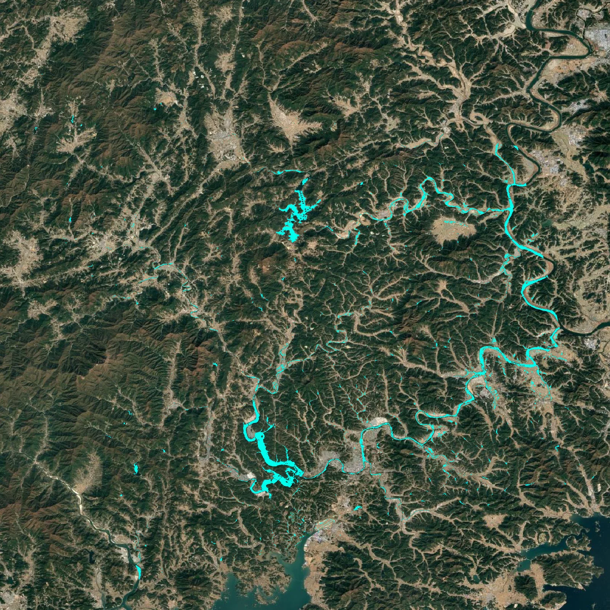

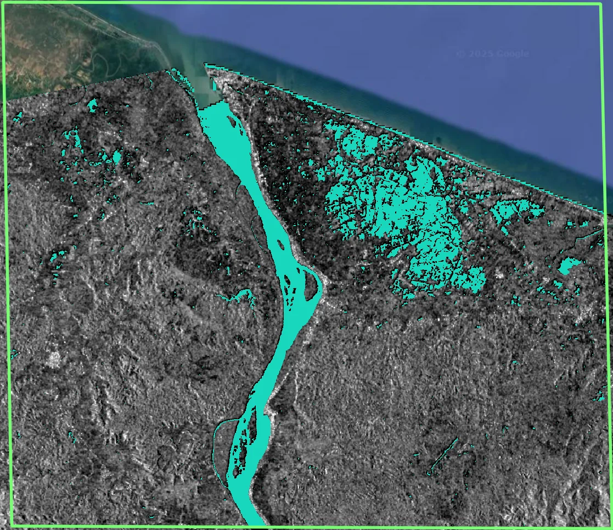
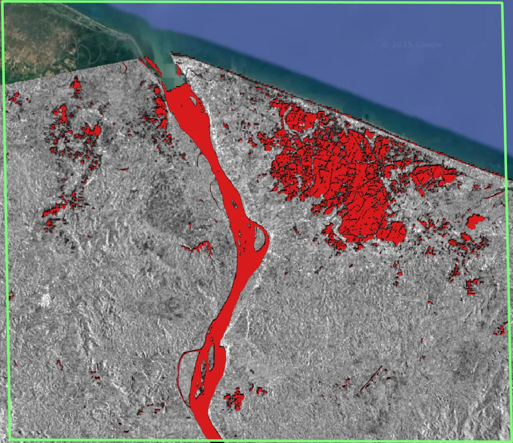
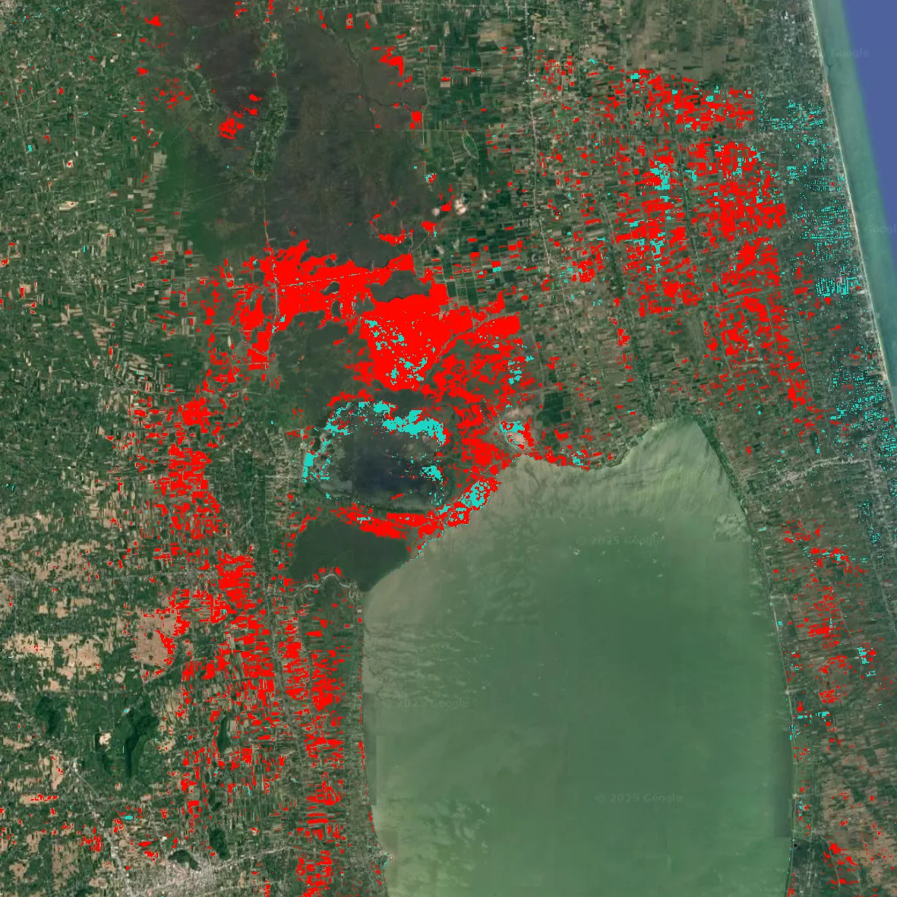

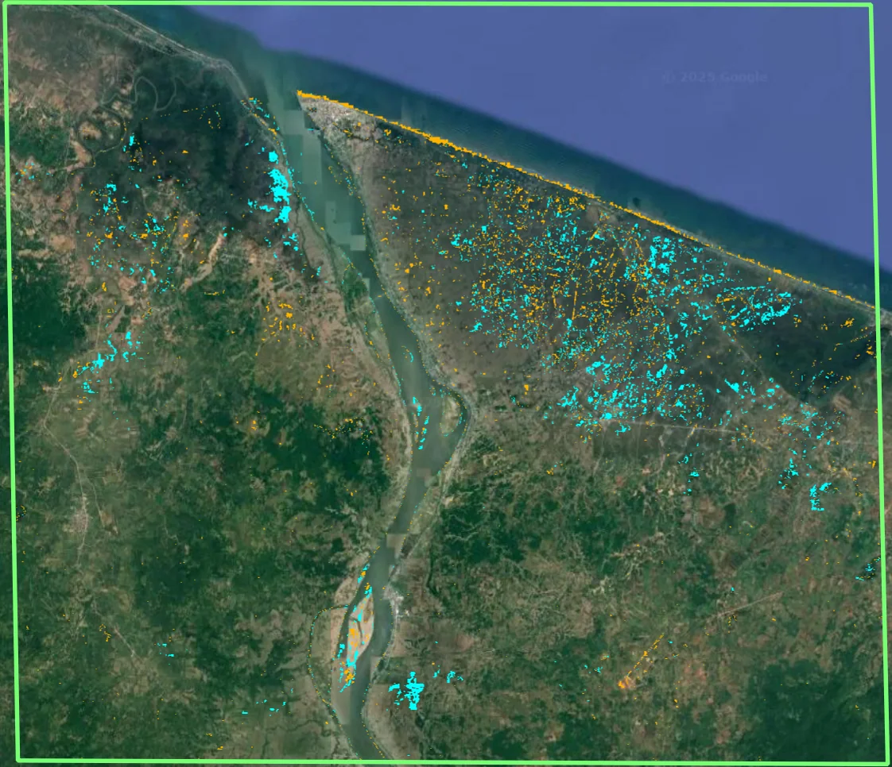
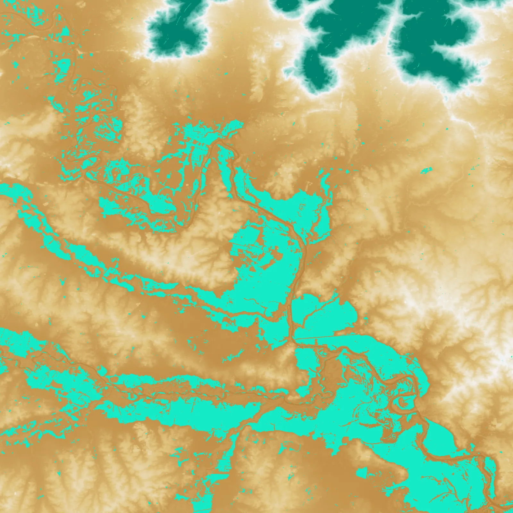
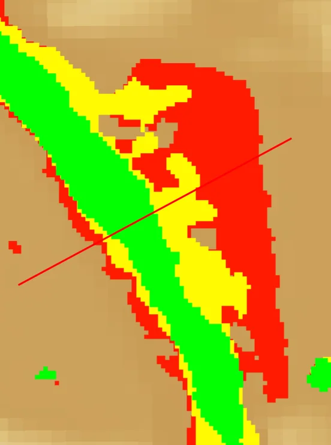
배운 점 · 한계What I learned · Limitations
- SAR 후방산란 물리 — 잔잔한 수면의 정반사로 인한 낮은 후방산란이 수체 탐지의 근거라는 점을 실제 데이터로 체득했다.
- Otsu의 히스토그램 민감성이 실패하는 지점과, Edge-Otsu가 왜 더 강건한지를 이해했다.
- 한계: 도시 침수에서는 건물-수면 이중산란(double-bounce)으로 후방산란이 오히려 높아져 미탐지가 남았다. 이 부분은 해결하지 못했다.
- Learned the backscatter physics hands-on: calm water acts as a specular reflector, which is exactly what makes it detectable.
- Saw where plain Otsu breaks down on skewed histograms, and why Edge-Otsu is more robust.
- Limitation: in urban floods, building–water double-bounce raises backscatter instead of lowering it, so those areas stay under-detected. I did not solve this.
산출물Deliverables
- s1_processor v3–v8 코드 시리즈
- Flood_mapping 기술 문서
- 지역별 분석 보고서 6종
- s1_processor v3–v8 code series
- Flood mapping technical note
- Six regional analysis reports
원본 보고서와 발표자료는 사내 자료로 공개하지 않습니다. 분석 코드는 GitHub에 정리되어 있습니다.Source reports and decks are internal and not published here. Analysis code is organised on GitHub.